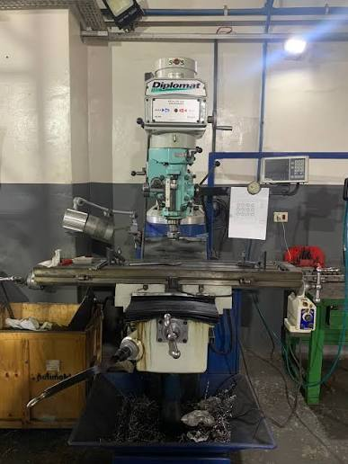

01 — FUNÇÃO PRINCIPAL
Remoção controlada de material
A fresa gira e remove pequenos fragmentos — os cavacos — enquanto a peça ou a ferramenta se desloca. O processo permite obter superfícies, contornos e dimensões especificadas.
Precisão no corte, modelagem e desbaste de materiais sólidos. A fresadora ferramentadeira utiliza ferramentas rotativas — as fresas — para remover material em forma de cavacos e produzir peças com o formato e as dimensões desejadas.

Uma máquina versátil para fabricação, ajuste e recuperação de componentes, com aplicação em diferentes etapas da produção mecânica.
A fresa gira e remove pequenos fragmentos — os cavacos — enquanto a peça ou a ferramenta se desloca. O processo permite obter superfícies, contornos e dimensões especificadas.
É utilizada na fabricação de matrizes, moldes, engrenagens e eixos, além de reparos, produção de peças de reposição e protótipos em pequenos lotes.
Consulte os documentos de manutenção e inspeção da fresadora.
Documento para orientar o planejamento das atividades de manutenção e conservação do equipamento.
Lista de verificação para inspeção da fresadora antes da operação.
Orientações para a limpeza do equipamento e a lubrificação dos componentes, contribuindo para a conservação e o funcionamento adequado da fresadora.
A operação adequada depende da ferramenta instalada, da fixação, do material e dos parâmetros de corte.
Usinagem de superfícies planas para obter nivelamento e acabamento.
Execução de canais, rasgos de chaveta e encaixes em peças.
Usinagem de superfícies inclinadas conforme a geometria desejada.
Produção ou acabamento de furos com ferramenta e configuração adequadas.
Correção e ampliação de furos para alcançar diâmetro e alinhamento requeridos.
Metais como aço, ferro fundido e alumínio, além de plásticos industriais compatíveis.
Imagem de referência com identificação visual das partes da fresadora.

Consulte os procedimentos da oficina e a documentação oficial. Use os EPIs exigidos, fixe corretamente a peça e a ferramenta, mantenha as proteções instaladas e nunca remova cavacos com a máquina em movimento.